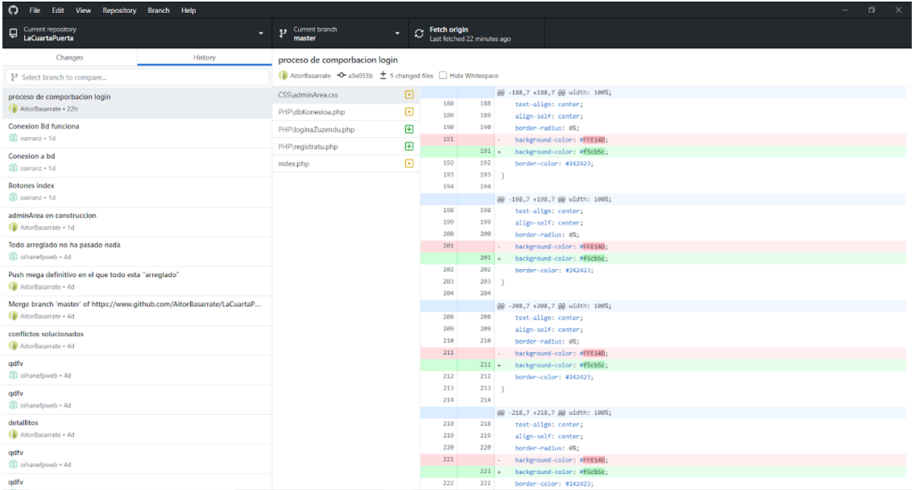

GITHUB
NOLA FUNTZIONATZEN DU?
- Ezkerraldean funtzionamenduan dauzkazun errepositorioak ikusiko dituzu. Aukeratu nahi duzuna.
- Aukeratu ostean hau ikusiko da.
- Changes: Zuk egin dituzun aldaketa berriak agertuko dira.
- History: Aldaketen historiala agertuko da.
- Local changes: Bertan bertsio batean klikatzean agertuko da kodearen zein pare aldatu, zein ezabatu eta zein berritu diren.
NOLA GORDE ALDAKETAK?
- Proiektuan aldaketak egin baino fetch origin botoiari eman behar zaio, aldaketak egongo balira, pull agertuko da. Orduan pull botoiari eman behar zaio berrizteko zure aurreko bertsioa, azkenengo bertsioarekin.
- Hori egin ostean, programatzen hasi eta nahi dituzun aldaketak egin.
- Amaitzen duzunean, changes atalera joan eta ikusiko dituzu egin dituzun aldaketa guztiak.
- Zurekin lan egiten dutenek zer aldatu duzun jakiteko, deskripzio bat idatzi beharko duzu. Orduan summary leuan ttitulua jartzen duzu eta description egin duzunaren erresumen bat. Amaitzen duzunean, commit to master sakatzen duzu.
- Commit sakatzean, zure aldaketak modu lokalean gorde dira.
- Lokalean gorde ostean, zure aldaketak besteak ikusteko goian eskumaldean push botoia sakatzen duzu.
- Push sakatzean, bertzioak aktualizatu egin dira eta aldaketak eginda egongo dira.
